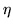
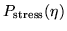

The code that explicitly defines the ecolab model is contained in ecolab.cc. An example of a completely different model is contained in newman.cc, and newman.tcl. This implements a generalisation of a model described by [1] where the species density is a boolean value (either a species is extinct, (value=0) or it is alive). The dynamics are controlled by a set of threshhold values, which are different for different species, and a randomly generated stress

which follows some distribution
(eg Gaussian). If the stress exceeds that of the species' threshold, then the species becomes extinct. There is a small additional probability that a species becomes extinct even when the threshold is not extinct (decreasing proportionally to the amount that the threshold is greater than the stress). This prevents the system becoming stuck with maximally fit organisms (maximal thresholds). Mutation is performed in a similar way to ecolab, although there is no need to consider an interaction matrix. The number of mutants is computed such that the average no. of mutations equals the average number of extinctions. This is to keep the number of species roughly constant in time, although it can fluctuate around the mean. This is a generalization of Mark Newman's constant species condition, and appears to be necessary to avoid the system exploding or crashing to zero.The main items that need to be constructed in a model file are: